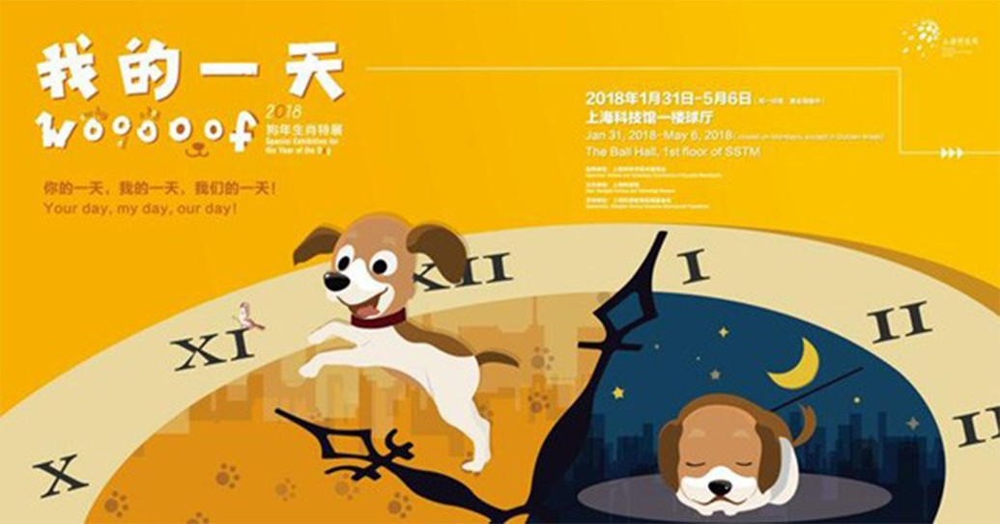

案例一
2017/12/05
它是我们最亲密的伙伴，给我们最温柔、最长情的陪伴。它时而蠢萌又时而机灵，给我们带来了无限欢笑的时光。它就是今年的主角——汪星人！
关于汪星人的一天，关于它个性与习惯的小秘密，统统将在这里展现。一起拭目以待吧！

上海科技馆狗年生肖展“我的一天”，从狗的视角切入，以第一人称的叙述方式，围绕家犬的起源与驯化、功能与特性、行为与情感等主题，展现从古至今狗与人类的亲密关系。
展览通过一个个小房间，将狗狗生活的一天串联起来，并运用多种技术手段强调娱乐互动，让观众体验狗狗欢乐又充实的一天。